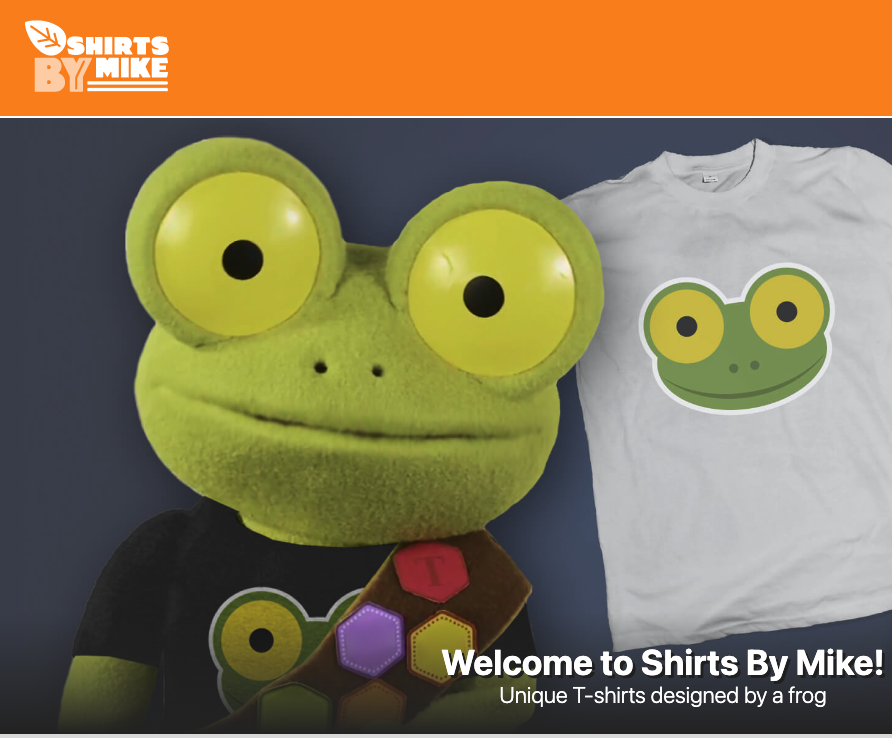

UX Design Case Study 3
- Overview
- User Research
- Stakeholder notes
- User Personas
- Design Principles
- Strengths & Weaknesses
- Competitive Analysis
- Summary
- Journey Map
- Empathy Map
T-shirts by Mike website redesign
Who:
Mike the T-shirt Frog
What:
I have been tasked with critiquing shirtsbymike.com, an e-commerce website that sells t-shirts. My client wants to know if anything should be changed to make the site look and/or function better for their customers. I will need to describe the design elements I see on the site and determine what improvements need to be made. Explain each improvement so my client understands how it will benefit their customers.
This was a student exercise.
When:
A few days
Where:
Website
How:
Paper and Pencil, Browser research
Steps
User Research
Shirts By Mike has provided you with this information about their audience. This research represents the primary users of this website.
- Mostly ages 16-35
- Primarily based in the United States
- Treehouse students
- Lifelong learners
- Values community
- Playful
Bio: They are lifelong learners, who value community and have a playful spirit. They often support non-profit organizations.
Goals: Their goal is to be comfortable and stylish (and maybe even show off their geek credentials a bit) while learning new skills.
Stake Holder Interview notes
Students want t-shirts that are fun and make them feel connected to the community.
Problem
- Our website is dated. Feel free to refresh the branding, if needed.
- The content looks stale; we want to keep it fresh with various campaigns.
- We are unable to highlight a featured t-shirt.
Competitors
- designbyhumans.com - t-shirts
- threadless.com - t-shirts
- teepublic.com - t-shirts
Goals
What should this project accomplish for the business?
We'd like to launch a featured t-shirt of the month. The goal is to increase t-shirt sales by providing a limited edition t-shirt.
How will you, personally, define success for this project?
These are the success metrics:
- Increase sales by 20%
- Increase unique page visits by 10%
- Strategy
In what direction is the business heading?
We're aiming to continue providing quality t-shirts to the student audience.
User personas

Basic info (age, location, job, salary)
They are 16 to 35 years old, and are either full students, or working elsewhere, but studying part time.
Goals & Needs
Their goal is to be comfortable and stylish while they are learning new skills.
Behaviors
They are lifelong learners, with a sense of community and are playful. They often support non-profit organizations.
Frustrations
Time is tight, as they have coursework to do. In addition, money may be a little tight, due to the cost of school each month.
Design Principles
Color
There is high contrast present on the site. The prominent colors are Orange (for the header and footer) and Grey (for the body), which don’t seem to follow any established color scheme.
Shapes
In terms of shapes, the site is fairly rectangular, with the only notable exception being the leaf in the logo, which points your attention downward, towards the company name within the logo.
Groupings
The elements seem to be grouped by T-shirt type, vs. by design type. This is logical, but since most people will buy a t-shirt based on the message it carries, it would be better served to organize by design first, and then by t-shirt type.
Balance and Organization
There is a header section (containing the shopping cart and the logo of the site), a main content area (with T-shirt designs on it), and a footer section (containing the social media links, contact link, and copyright info).
Strengths and Weaknesses
Strengths
- The copy is funny (t-shirts designed by a frog).
- The frog graphic is cute, and seems fun, which would appeal to the target audience.
- It appears to be very simple and easy to navigate. There is no thinking involved in using the website, beyond which t-shirt color and design that you want.
Weaknesses
- The color scheme could be something more established, such as an analogous color scheme.
- The shirts should be organized by the design on the shirt, and then the type of shirt
- The price of the shirt could be a LOT more visible (on the detail page).
Competitive Analysis
While this site is filtering by product type first, it focuses attention on the designs themselves first. In addition, while the t-shirt displayed is in a rectangle, that rectangle is almost non-existent, keeping the focus on the t-shirt and less on the structure of the website (unlike shirts by mike). Price of the shirt in the detail page is very easy to read, which allows the user to make a decision quickly.
This site hit me with a popup coupon offer within a minute of being on the site. Very invasive design, IMHO. Organized by category. I will have to hunt to find the designs. They hit me with ANOTHER popup coupon. I’m done with this site.
https://www.sevenly.org (site is gone as of 12/1/22)
This site hit me with a popup coupon offer within a minute of being on the site. Very invasive design, IMHO. The detail page does display the price easier than shirts by mike, but not quite as effective as cottonbureau does.
Summary
The site basically works by displaying the t-shirt designs.
In terms of improving the site, I would a) sort by design, b) offer more designs than just the two designs, c) make the price more obvious in the detail page of the selected shirt, and d) get rid of the boxes that surround each t-shirt design sample, as it is distracting to the designs themselves.
By focusing more on the designs themselves (the actual product), you should be able to increase interest. In addition, it makes the site easier to comprehend, from a visual sense. By clearly displaying the price, you make it easier for the user to determine if the t-shirt is worth the price to them. In addition, if you make the site easier to use, then the users will come back when they have the funds to spend on a t-shirt.
DO NOT put a popup coupon offer on this page, nor a popup “Follow us on [insert social media here].” If you must, put that well towards the bottom of the page. Getting hit with that ten seconds after someone enters the site makes them rage-click the back button, and then they’re gone forever.